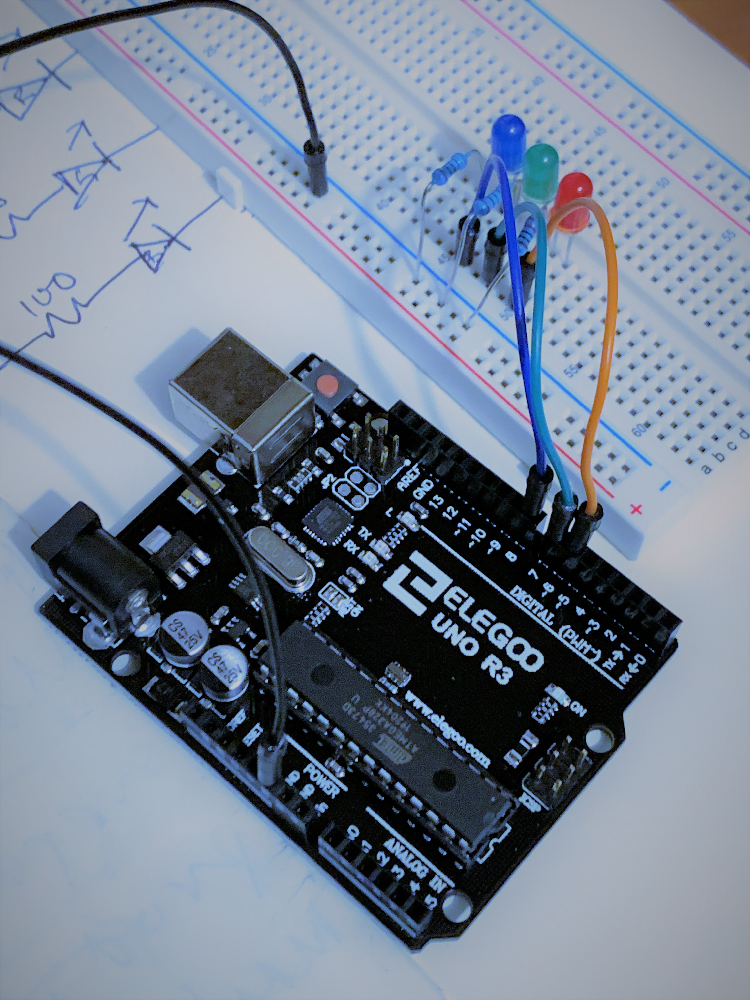
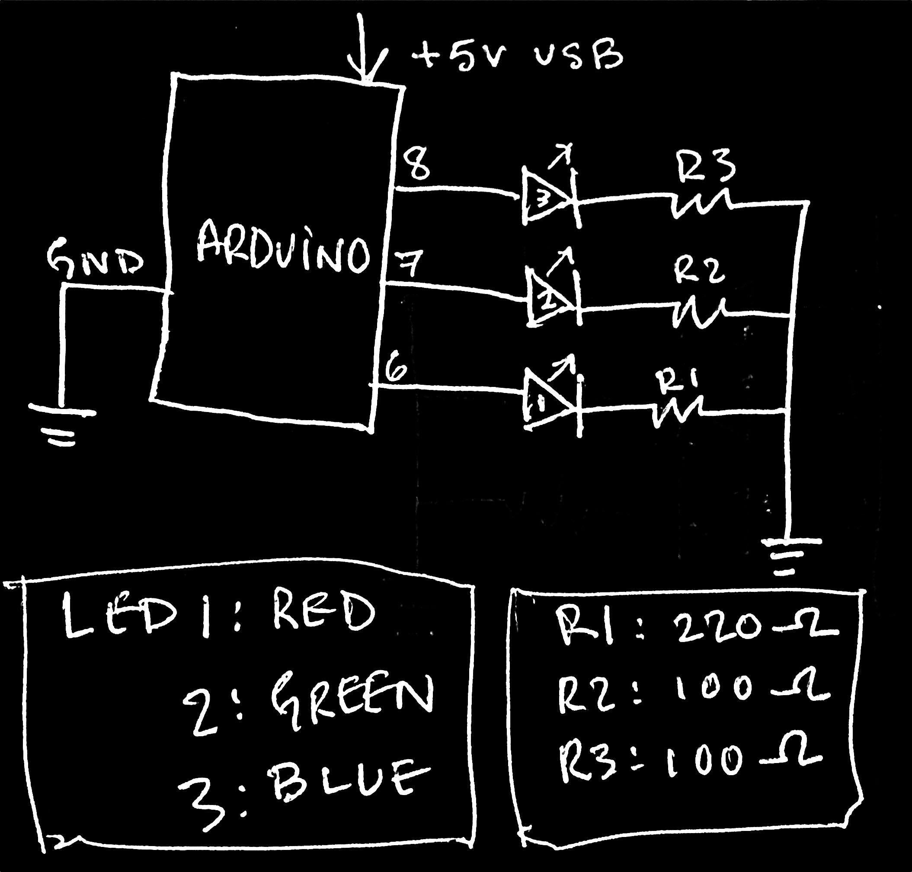

The requirements for A01 were to design a circuit in which at least 3 LEDs blink independently. The intention for this particular design was to have the blinking occur at attenuated random time intervals that would constantly change, providing an arrythmic seizure-inducing lightshow.
To determine the appropriate resistor values, first the LED DATASHEET provided by ELEGOO was used to find the operational VOLTAGE across the different LED types. Using the nominal current of 20mA, the required resistance was calculated using Ohm's law. The closest available resistor in the kit was then chosen, and the current checked once again using Ohm's law.
/*
A01 HCDE439 WIN20 // DEREK R
3 LEDs go blinky at independent, random intervals.
Interval changes between each change of state.
Range for random interval can be manipulated,
effecting timing for all LEDs.
The following tutorials were used for reference:
1) Blink without Delay
http://www.arduino.cc/en/Tutorial/BlinkWithoutDelay
2) Example #5: Adding a 2nd LED with millis()
https://www.baldengineer.com/millis-tutorial.html
*/
// define pins for each LED
const int led1Pin = 6;
const int led2Pin = 7;
const int led3Pin = 8;
// create state variable for each LED, initialize as 'false' (off
bool led1State = false;
bool led2State = false;
bool led3State = false;
// create variables to store time of last state change for each LED
// start with time zero to change intial state
unsigned long previousMillis1 = 0;
unsigned long previousMillis2 = 0;
unsigned long previousMillis3 = 0;
// random intervals!
int intRangeLow = 1;
int intRangeHigh = 300;
long randInterval1 = random(intRangeLow, intRangeHigh);
long randInterval2 = random(intRangeLow, intRangeHigh);
long randInterval3 = random(intRangeLow, intRangeHigh);
void setup() {
// set relevant pins to send voltage to LEDs
pinMode(led1Pin, OUTPUT);
pinMode(led2Pin, OUTPUT);
pinMode(led3Pin, OUTPUT);
}
void loop() {\
// get current time and store as variable for comparison
unsigned long currentMillis = millis();
// check if it's time to change LED1!
if (currentMillis - previousMillis1 >= randInterval1) { // compare time since last blink against interval
led1State = !led1State; // neat boolean method for state toggle
digitalWrite(led1Pin, led1State); // send LOW or HIGH out digital pin based on state
previousMillis1 = currentMillis; // update time of last state change
randInterval1 = random(intRangeLow, intRangeHigh); // new interval
}
// how about LED2? (same as above, changed variables)
if (currentMillis - previousMillis2 >= randInterval2) {
led2State = !led2State;
digitalWrite(led2Pin, led2State);
previousMillis2 = currentMillis; \
randInterval2 = random(intRangeLow, intRangeHigh);
}
// third time's a charm
if (currentMillis - previousMillis3 >= randInterval3) {
led3State = !led3State;
digitalWrite(led3Pin, led3State);
previousMillis3 = currentMillis;
randInterval3 = random(intRangeLow, intRangeHigh);
}
}